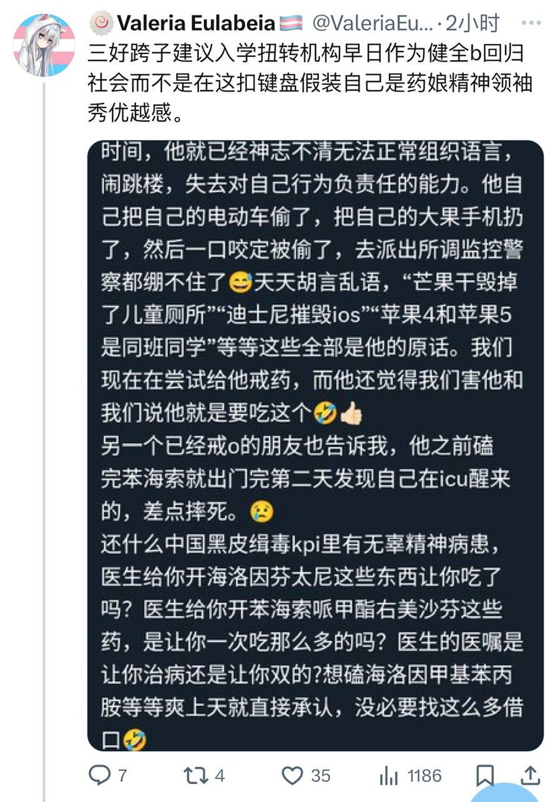

牧鸢
@LwrDHYyuxR22499
他@ValeriaEulabeia爸汤铁钢还是邓稼先的徒弟呢天天吃共产党的纳税人的四处讲课养出来了这个么出生
也不知道他的学生还有他的领导知道了汤戈韬当支黑还跟海外64分子关系这么亲近会怎么想
天天不是造谣就是搞群体孤立要么就是鉴跨虐跨骂别人是支人当支黑的活畜生
讲的话高高在上不把人当人
不如清真呢

Λzure色號の水彩翎.🧊
@KagurazakaAzure
能忍住不block Valeria也是神人了。
汤戈某参与造谣早就不是一次两次的新鲜事了。。 https://t.co/ACm1Bgboo3 https://t.co/Q3xCFUv2AG